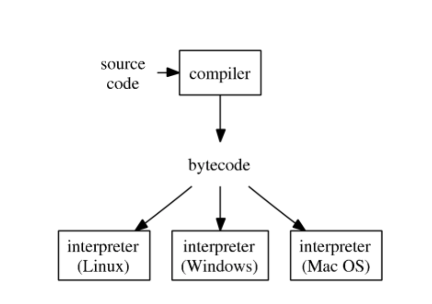
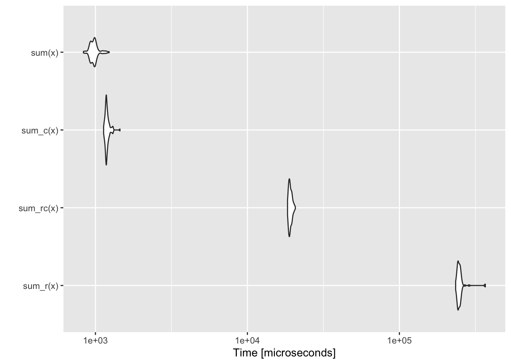

Chapter 52 Speed up in r programming
Hongling Liu and Xinrui Zhang
library(ggplot2)
library(tidyverse)
library(microbenchmark)
library(compiler)
library(Rcpp)
library(parallel)It is well known that R is not a fast language, since R was deliberately designed to simplify our process of performing data analysis and statistics, rather than making life easier for our computers to process. While R is slow compared to some other programming languages, it’s fast enough for most of our purposes.
The goal of our community contribution is to give you a deeper understanding of how we could yield the maximum efficiency when running R. We will first introduce the typical development cycle computational statistics with R and what is some of R’s performance characteristics, to help you understand how R codes are being executed. We will also show you two relatively easy ways to speed up code using the Rcpp package and parallel processing.
52.1 Typical development cycle for computational statistics
First, let’s take a look at the usual steps of computational statistics with R, and what questions we need to ask ourselves for each step:
Scientific planning: What experiments would verify/invalidate our hypotheses? What parameter settings should we consider?
Code planning: What does the code need to do? How will the code fit together? What functions will be used? What are their inputs/outputs etc.
Implementation:
Prototype functions, classes, etc., partial documentation
Write unit tests
Implement code, run unit tests, debug
Broader testing, more debugging
Profile code, identify bottlenecks
Optimize code
Conduct experiments.
Full documentation.
52.2 Bytecode compilation
After profiling, what can we do to improve performance?
Questions to ask ourselves: Are there obvious speedups? Are things being computed unnecessarily? Are you using a
data.framewhere you should be using a matrix etc.Look up your problem on internet (e.g., search for “lapply slow” or “speeding up
lapply” etc.)Try the just-in-time (JIT) compiler.
Consider re-writing some or all of the code in a compiled language (e.g., C/C++).
Try parallelization.
R typical execution:

- Since R 2.1.4, the
compilerpackage by Luke Tierney is distributed with base R.compilerpackage compiles an R function into bytecode.
52.2.1 Example: summing a vector
Brute-force for loop for summing a vector:
sum_r <- function(x) {
sumx <- 0.0
for (i in 1:length(x)) {
sumx <- sumx + x[i]
}
return(sumx)
}
sum_r## function(x) {
## sumx <- 0.0
## for (i in 1:length(x)) {
## sumx <- sumx + x[i]
## }
## return(sumx)
## }Run the code on 1e6 elements:
library(microbenchmark)
library(ggplot2)
x = seq(from = 0, to = 100, by = 0.0001)
microbenchmark(sum_r(x))## Unit: milliseconds
## expr min lq mean median uq max neval
## sum_r(x) 18.42667 18.66871 19.00939 18.78434 19.10339 23.21351 100Let’s compile the function into bytecode sum_rc and benchmark again:
## function(x) {
## sumx <- 0.0
## for (i in 1:length(x)) {
## sumx <- sumx + x[i]
## }
## return(sumx)
## }
## <bytecode: 0x7fcab8c853c0>Benchmark again:
## Unit: milliseconds
## expr min lq mean median uq max neval cld
## sum_r(x) 18.46714 18.69644 18.97077 18.84126 19.05345 21.27187 100 a
## sum_rc(x) 19.21664 19.39168 19.65000 19.54981 19.76612 21.34296 100 bBefore we look into the results, let’s look at the microbenchmark function. Here we use it as a more accurate replacement of the often seen system.time( ) expression to accurately measure the time it takes to evaluate expr. Since we are only measuring the performance of a very small piece of code, we could get the accurate running time in milliseconds(ms), microseconds (µs) or even nanoseconds (ns) by using microbenchmark.
microbenchmark( ) runs each expression 100 times by default (it can be controlled by the times parameter). In the process, it also randomises the order of the expressions. It summarises the results with a minimum (min), lower quartile (lq), median, upper quartile (uq), and maximum (max). By default, microbenchmark( ) runs each expression 100 times (controlled by the times parameter). In the process, it also randomises the order of the expressions. It summarises the results with a minimum (min), lower quartile (lq), median, upper quartile (uq), and maximum (max). We could focus on the median and mean, and use the upper and lower quartiles (lq and uq) to get a feel for the variability.
In our example, we can see that compiling into bytecode does not make a big difference, since according to microbenchmark(), the running time of our sum_r function is mostly (more than half) in the interquartile range(18.6682668,19.0139637), and after compiling, the interquartile range for sum_rc(x) is (18.5852645,19.0334713), so we could say that compiling into bytecode does not help much.
The reason behind this may be seen at the following code where we found out that the function sum_r is already compiled into bytecode before execution.
## function(x) {
## sumx <- 0.0
## for (i in 1:length(x)) {
## sumx <- sumx + x[i]
## }
## return(sumx)
## }
## <bytecode: 0x7fcace30dc48>Let’s turn off JIT (just-in-time compilation), re-define the (same) sum_r function, and benchmark again:
## [1] 3sum_r <- function(x) {
sumx <- 0.0
for (i in 1:length(x)) {
sumx <- sumx + x[i]
}
return(sumx)
}
microbenchmark(sum_r(x))## Unit: milliseconds
## expr min lq mean median uq max neval
## sum_r(x) 236.8139 240.8723 246.1058 243.033 246.1024 363.2089 100Now we witness the slowness of the un-compiled sum_r.
Documentation of enableJIT:
enableJIT enables or disables just-in-time (JIT) compilation. JIT is disabled if the argument is 0. If level is 1 then larger closures are compiled before their first use. If level is 2, then some small closures are also compiled before their second use. If level is 3 then in addition all top level loops are compiled before they are executed. JIT level 3 requires the compiler option optimize to be 2 or 3. The JIT level can also be selected by starting R with the environment variable R_ENABLE_JIT set to one of these values. Calling enableJIT with a negative argument returns the current JIT level. The default JIT level is 3.
Since R 3.4.0 (Apr 2017), the JIT (‘Just In Time’) bytecode compiler is enabled by default at its level 3.
If you create a package, then you automatically compile the package on installation by adding
to the DESCRIPTION file.
52.3 Rcpp
Now, we are going to introduce the package Rcpp which helps yield the maximum efficiency for R. And there is a learning source for whoever interested:
- Advanced R: https://adv-r.hadley.nz/rcpp.html
We previously used compiler package to compile R code into bytecode, which is translated to machine code by interpreter during execution. However, A low-level language such as C, C++, and Fortran is compiled into machine code directly, making it easy for our computer to process the code, and Rcpp makes it very simple to connect C++ to R, where it allows us to write C++ functions in R, therefore yielding the maximum efficiency.
52.3.1 Use cppFunction
Rcpp package provides a convenient way to embed C++ code in R code.
library(Rcpp)
cppFunction('double sum_c(NumericVector x) {
int n = x.size();
double total = 0;
for(int i = 0; i < n; ++i) {
total += x[i];
}
return total;
}')
sum_c## function (x)
## .Call(<pointer: 0x114df4d20>, x)Benchmark (1) compiled C++ function sum_c together with (2) R function sum_r, (3) compiled R function sum_rc, and (4) the sum function in base R:
## Unit: microseconds
## expr min lq mean median uq max neval cld
## sum_r(x) 234397.431 241834.061 249274.6285 246207.5540 251346.508 367581.264 100 c
## sum_rc(x) 18359.771 18786.024 19147.1806 19030.2450 19467.937 20668.589 100 b
## sum_c(x) 1132.231 1170.395 1194.4130 1182.3330 1204.066 1450.451 100 a
## sum(x) 833.530 934.224 979.8914 980.6715 1000.115 1231.062 100 a
Remember we turned off JIT by enableGIT(0) earlier.
This is a good example of where C++ is much more efficient than R. As shown by the above microbenchmark, sum_c() is competitive with the built-in (and highly optimised) sum(), while sum_r() is several orders of magnitude slower.
Therefore,Rcpp package is definitely a great tool for us to improve the efficiency for our R code.
52.4 Parallel computing
Now, we are going to discuss another way to get efficient with R – parallel computing:
Fact: base R was designed to be single-threaded. Even you request a fancy instance with 96 vCPUs, running R code is just using 1/96th of its power.
To perform multi-core computation in R:
Option 1: Manually run multiple R sessions.
Option 2: Make multiple
system("Rscript")calls. Typically automated by a scripting language (Python, Perl, shell script) or within ROption 3: Use package
parallel.
parallelpackage in R.Authors: Brian Ripley, Luke Tieney, Simon Urbanek.
Included in base R since 2.14.0 (2011).
Based on the
snow(Luke Tierney) andmulticore(Simon Urbanek) packages.To find the number of cores:
## [1] 852.4.1 Simulation example
Senario: Suppose we have a new method to calculate average, that is, to only choose primed-indexed number to calculate the average, and we would like to compute the average mean squared error (MSE) from both this new method and the classic method. Differently distributed random variables with different sample sizes will be tested. There are going to be many combinations of distribution and sample size.
\[ MSE = \frac{\sum_{r=1}^{\text{rep}} (\widehat \mu_r - \mu_{\text{true}})^2}{\text{rep}} \]
## check if a given integer is prime
isPrime = function(n) {
if (n <= 3) {
return (TRUE)
}
if (any((n %% 2:floor(sqrt(n))) == 0)) {
return (FALSE)
}
return (TRUE)
}
## estimate mean only using observation with prime indices
estMeanPrimes = function(x) {
n <- length(x)
ind <- sapply(1:n, isPrime)
return (mean(x[ind]))
}
## compare methods: sample avg and prime-indexed avg
compare_methods <- function(dist = "gaussian", n = 100, reps = 100, seed = 123) {
# set seed according to command argument `seed`
set.seed(seed)
# preallocate space to store estimators
msePrimeAvg <- 0.0
mseSamplAvg <- 0.0
# loop over simulation replicates
for (r in 1:reps) {
# simulate data according to command arguments `n` and `distr`
if (dist == "gaussian") {
x = rnorm(n)
} else if (dist == "t1") {
x = rcauchy(n)
} else if (dist == "t5") {
x = rt(n, 5)
} else {
stop(paste("unrecognized dist: ", dist))
}
# prime indexed mean estimator and classical sample average estimator
msePrimeAvg <- msePrimeAvg + estMeanPrimes(x)^2
mseSamplAvg <- mseSamplAvg + mean(x)^2
}
mseSamplAvg <- mseSamplAvg / reps
msePrimeAvg <- msePrimeAvg / reps
return(c(mseSamplAvg, msePrimeAvg))
}In order to indicate the option 2, we save the above codes in script [runSim.R].
52.4.1.1 Option 2
this example is only good for linux system
The [
runSim.R] script to include argumentsseed(random seed),n(sample size),dist(distribution) andrep(number of simulation replicates). Whendist="gaussian", generate data from standard normal; whendist="t1", generate data from t-distribution with degree of freedom 1 (same as Cauchy distribution); whendist="t5", generate data from t-distribution with degree of freedom 5. CallingrunSim.Rwill (1) set random seed according to argumentseed, (2) generate data according to argumentdist, (3) compute the primed-indexed average estimator and the classical sample average estimator for each simulation replicate, (4) report the average mean squared error (MSE)The [
autoSim.R] script to run simulations with combinations of sample sizesnVals = seq(100, 500, by=100)and distributionsdistTypes = c("gaussian", "t1", "t5").rep = 50is used for MSE.
cat resources/speed_up_in_r_programming/autoSim.R- Download the [
runSim.R] and [autoSim.R] scripts, and run the following codes, this will parallelly compute results from all combinations, and write output to appropriately named files.
Rscript resources/speed_up_in_r_programming/autoSim.R seed=280 rep=5052.4.1.2 Option 3
52.4.1.3 Serial code
We need to loop over 3 generative models (distTypes) and 20 samples sizes (nVals). That are 60 embarssingly parallel tasks.
This is the serial code that double-loop over combinations of distTypes and nVals:
## simulation study with combination of generative model `dist` and
## sample size `n` (serial code)
simres1 = matrix(0.0, nrow = 2 * length(nVals), ncol = length(distTypes))
i = 1 # entry index
system.time(
for (dist in distTypes) {
for (n in nVals) {
#print(paste("n=", n, " dist=", dist, " seed=", seed, " reps=", reps, sep=""))
simres1[i:(i + 1)] = compare_methods(dist, n, reps, seed)
i <- i + 2
}
}
)## user system elapsed
## 27.953 0.110 28.187## [,1] [,2] [,3]
## [1,] 0.0103989436 0.017070603 312.4001
## [2,] 0.0410217819 0.066503177 200.3237
## [3,] 0.0065484669 0.011260420 173.9631
## [4,] 0.0297390639 0.047465397 199.5330
## [5,] 0.0056445593 0.007754855 68026.7023
## [6,] 0.0215380206 0.040039145 1230343.1341
## [7,] 0.0040803523 0.006871930 43609.7815
## [8,] 0.0165144049 0.032353077 931755.3182
## [9,] 0.0032566766 0.005417194 30283.1286
## [10,] 0.0161191554 0.026330133 684726.8788
## [11,] 0.0027565672 0.004444172 22306.1369
## [12,] 0.0145039253 0.022820075 539105.3392
## [13,] 0.0024915830 0.003798500 17119.0807
## [14,] 0.0122801335 0.022788299 435528.4778
## [15,] 0.0023706676 0.003360507 13531.4104
## [16,] 0.0112703627 0.016674640 111.4673
## [17,] 0.0020190283 0.003147367 10973.3489
## [18,] 0.0106157492 0.016027485 278.9663
## [19,] 0.0017567901 0.002863640 9069.6647
## [20,] 0.0096185720 0.016444671 261373.7646
## [21,] 0.0016441481 0.002637964 7629.9867
## [22,] 0.0081784426 0.013710539 296.6235
## [23,] 0.0015075246 0.002498450 6498.2362
## [24,] 0.0088018140 0.012909942 191986.6388
## [25,] 0.0014372130 0.002308089 5603.9395
## [26,] 0.0077292632 0.012789483 171280.5448
## [27,] 0.0012924543 0.002216936 4889.8739
## [28,] 0.0069012154 0.011052562 170.3975
## [29,] 0.0011994654 0.001987311 4299.6838
## [30,] 0.0067559611 0.011291788 178.7454
## [31,] 0.0011642413 0.001888637 3806.8472
## [32,] 0.0070131993 0.010048327 140.2389
## [33,] 0.0011566121 0.001873365 3401.9766
## [34,] 0.0065066558 0.009020973 34.1644
## [35,] 0.0010506067 0.001595430 3049.0432
## [36,] 0.0060026682 0.010338424 103578.0598
## [37,] 0.0009770234 0.001618095 2768.4517
## [38,] 0.0054705674 0.009229294 143.554452.4.1.4 Using mcmapply
Run the same task using mcmapply function (parallel analog of mapply) in the parallel package:
## simulation study with combination of generative model `dist` and
## sample size `n` (parallel code using mcmapply)
library(parallel)
system.time({
simres2 <- mcmapply(compare_methods,
rep(distTypes, each = length(nVals), times = 1),
rep(nVals, each = 1, times = length(distTypes)),
reps,
seed,
mc.cores = 4)
})## user system elapsed
## 25.169 0.455 9.046## [,1] [,2] [,3]
## [1,] 0.0103989436 0.017070603 312.4001
## [2,] 0.0410217819 0.066503177 200.3237
## [3,] 0.0065484669 0.011260420 173.9631
## [4,] 0.0297390639 0.047465397 199.5330
## [5,] 0.0056445593 0.007754855 68026.7023
## [6,] 0.0215380206 0.040039145 1230343.1341
## [7,] 0.0040803523 0.006871930 43609.7815
## [8,] 0.0165144049 0.032353077 931755.3182
## [9,] 0.0032566766 0.005417194 30283.1286
## [10,] 0.0161191554 0.026330133 684726.8788
## [11,] 0.0027565672 0.004444172 22306.1369
## [12,] 0.0145039253 0.022820075 539105.3392
## [13,] 0.0024915830 0.003798500 17119.0807
## [14,] 0.0122801335 0.022788299 435528.4778
## [15,] 0.0023706676 0.003360507 13531.4104
## [16,] 0.0112703627 0.016674640 111.4673
## [17,] 0.0020190283 0.003147367 10973.3489
## [18,] 0.0106157492 0.016027485 278.9663
## [19,] 0.0017567901 0.002863640 9069.6647
## [20,] 0.0096185720 0.016444671 261373.7646
## [21,] 0.0016441481 0.002637964 7629.9867
## [22,] 0.0081784426 0.013710539 296.6235
## [23,] 0.0015075246 0.002498450 6498.2362
## [24,] 0.0088018140 0.012909942 191986.6388
## [25,] 0.0014372130 0.002308089 5603.9395
## [26,] 0.0077292632 0.012789483 171280.5448
## [27,] 0.0012924543 0.002216936 4889.8739
## [28,] 0.0069012154 0.011052562 170.3975
## [29,] 0.0011994654 0.001987311 4299.6838
## [30,] 0.0067559611 0.011291788 178.7454
## [31,] 0.0011642413 0.001888637 3806.8472
## [32,] 0.0070131993 0.010048327 140.2389
## [33,] 0.0011566121 0.001873365 3401.9766
## [34,] 0.0065066558 0.009020973 34.1644
## [35,] 0.0010506067 0.001595430 3049.0432
## [36,] 0.0060026682 0.010338424 103578.0598
## [37,] 0.0009770234 0.001618095 2768.4517
## [38,] 0.0054705674 0.009229294 143.5544We see roughly 3x-4x speedup with
mc.cores=4.mcmapply,mclapplyand related functions rely on the forking capability of POSIX operating systems (e.g. Linux, MacOS) and is not available in Windows.parLapply,parApply,parCapply,parRapply,clusterApply,clusterMap, and related functions create a cluster of workers based on either socket (default) or forking. Socket is available on all platforms: Linux, MacOS, and Windows.
52.4.1.5 Using clusterMap
The same simulation example using clusterMap function:
cl <- makeCluster(getOption("cl.cores", 4))
clusterExport(cl, c("isPrime", "estMeanPrimes", "compare_methods"))
system.time({
simres3 <- clusterMap(cl, compare_methods,
rep(distTypes, each = length(nVals), times = 1),
rep(nVals, each = 1, times = length(distTypes)),
reps,
seed,
.scheduling = "dynamic")
})## user system elapsed
## 0.022 0.005 7.087## [,1] [,2] [,3]
## [1,] 0.0103989436 0.017070603 312.4001
## [2,] 0.0410217819 0.066503177 200.3237
## [3,] 0.0065484669 0.011260420 173.9631
## [4,] 0.0297390639 0.047465397 199.5330
## [5,] 0.0056445593 0.007754855 68026.7023
## [6,] 0.0215380206 0.040039145 1230343.1341
## [7,] 0.0040803523 0.006871930 43609.7815
## [8,] 0.0165144049 0.032353077 931755.3182
## [9,] 0.0032566766 0.005417194 30283.1286
## [10,] 0.0161191554 0.026330133 684726.8788
## [11,] 0.0027565672 0.004444172 22306.1369
## [12,] 0.0145039253 0.022820075 539105.3392
## [13,] 0.0024915830 0.003798500 17119.0807
## [14,] 0.0122801335 0.022788299 435528.4778
## [15,] 0.0023706676 0.003360507 13531.4104
## [16,] 0.0112703627 0.016674640 111.4673
## [17,] 0.0020190283 0.003147367 10973.3489
## [18,] 0.0106157492 0.016027485 278.9663
## [19,] 0.0017567901 0.002863640 9069.6647
## [20,] 0.0096185720 0.016444671 261373.7646
## [21,] 0.0016441481 0.002637964 7629.9867
## [22,] 0.0081784426 0.013710539 296.6235
## [23,] 0.0015075246 0.002498450 6498.2362
## [24,] 0.0088018140 0.012909942 191986.6388
## [25,] 0.0014372130 0.002308089 5603.9395
## [26,] 0.0077292632 0.012789483 171280.5448
## [27,] 0.0012924543 0.002216936 4889.8739
## [28,] 0.0069012154 0.011052562 170.3975
## [29,] 0.0011994654 0.001987311 4299.6838
## [30,] 0.0067559611 0.011291788 178.7454
## [31,] 0.0011642413 0.001888637 3806.8472
## [32,] 0.0070131993 0.010048327 140.2389
## [33,] 0.0011566121 0.001873365 3401.9766
## [34,] 0.0065066558 0.009020973 34.1644
## [35,] 0.0010506067 0.001595430 3049.0432
## [36,] 0.0060026682 0.010338424 103578.0598
## [37,] 0.0009770234 0.001618095 2768.4517
## [38,] 0.0054705674 0.009229294 143.5544Again we see roughly 3x-4x speedup by using 4 cores.
clusterExportcopies environment of master to slaves.
52.5 Package development
Learning resources:
Book _R Packages_ by Hadley Wickham
RStudio tutorial: https://support.rstudio.com/hc/en-us/articles/200486488-Developing-Packages-with-RStudio